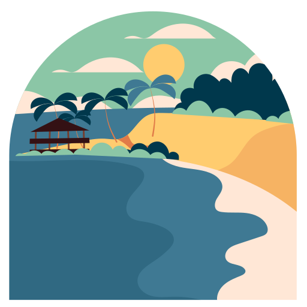
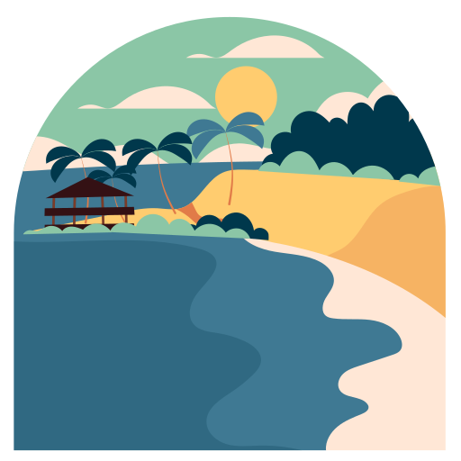

I'm Darius
Student & IT enthusiast


Passionate and dedicated programmer on a quest for exciting opportunities in the world of programming. With a strong foundation in python and a knack for problem-solving, eager to make a meaningful impact in the field.
 At the moment I am taking part in various activities such as summer schools, volunteering and projects , with well-developed communication skills, good material and time management skills, also a person-oriented on the development and improvement of basic skills in IT/engineering, especially biomedical technologies,but also soft skills such as intercultural sensitivity, language skills, and analytical perspective.
At the moment I am taking part in various activities such as summer schools, volunteering and projects , with well-developed communication skills, good material and time management skills, also a person-oriented on the development and improvement of basic skills in IT/engineering, especially biomedical technologies,but also soft skills such as intercultural sensitivity, language skills, and analytical perspective.
The right job for me is one where I can learn new thing everyday and apply them in a logical manner. Team oriented or working by myself, I can adapt to any environment.
Ethics and Deontology in Medical Engineering | Cellular and Molecular Biology | Biophysics | Electrotechnics | Science of Metallic Materials | Chemistry | Physiology | Mathematics 1 | Mathematics 2 | Physics | Topographic and Functional Anatomy | Physics | Communication Sciences | Immunology and Special Pathophysiology | Medical Engineering | Biomechanics and Biomechatronics | Transport Phenomena in Physiological Media | Science of Biopolymeric Materials | General Pathophysiology | Analysis of Biological Samples | Electrosafety and Electromagnetic Compatibility | Science of Bioceramic Materials | Pharmacology |
Relevant subjects: Programmable Circuits with Biomedical Applications | Software for Medical Equipment | Computer-Aided Graphics | Applied Informatics 1 | Analog and Digital Electronics in Biomedicine | Robots in Medicine | Biomedical Sensors |
Mathematics and Informatics
100 Days of Code: The Complete Python Pro Bootcamp (2023)|Vodafone first summer school (2023)|Database Design and Programming with SQL certificate (2021)|Professional Competence Certificate in Informatics (2021)|ECDL certificate (2019)|Cambridge C1-Advanced|
Python | C++ | Arduino | AutoCAD | Matlab | Microsoft Suites | Google Suites | HTML | CSS.
Communication skills | Decision-making skills | Training and developmental skills | Empathic skills | Organizational skills | Leadership skills | Strategic-thinking skills | Technical skills | Multi-tasking skills.
Mother tongue: Romanian | Other language(s): English (C1)
Website managing | Social media managing
My colleagues and I realised an user friendly performance monitoring application.
Ansys fluent simulation of IV administration of a saline solution in MCV
DevTalks has become a driver of change for the tech world, known as the most desired expo-conference for developers and IT professionals in Romania. Thus, the DevTalks network is succeeding to cover all year with valuable content and gatherings of the IT Community enlarging the network to more than 60 000 IT professionals and developers from all over Romania and internationally.
The reason I joined MED organisation. This competition proves that young people can achieve big things.
I am eager to connect and engage in conversations related to my expertise in Biomedical Engineering, IT, and Biomaterials. Whether it's about exciting projects, networking, or exploring synergies, I look forward to hearing from you.
Thank you for your interest.
LinkedIn© 2023 Carauleanu Darius-Alexandru.